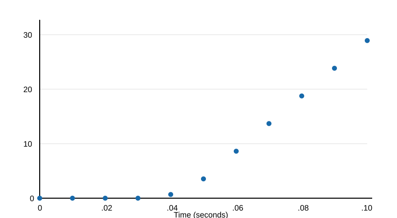
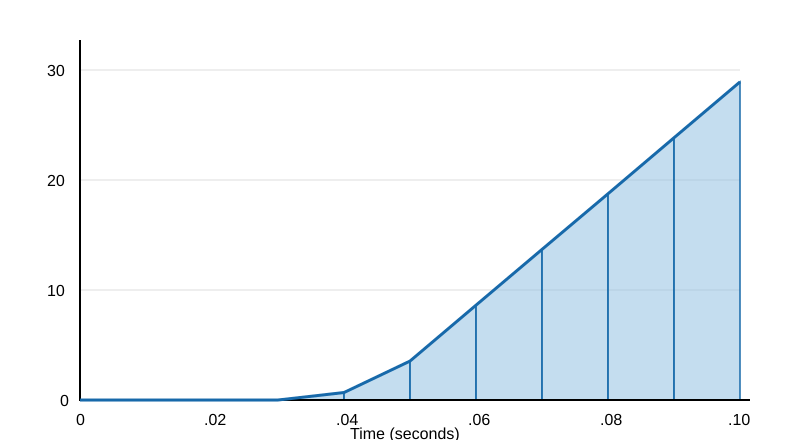

Both are useful, and we need to be able to do calculus on both.
We integrate acceleration to get velocity. We integrate velocity to get position.
\[ a(t)\longrightarrow v(t)\longrightarrow x(t) \]
\[ v(t)-v(0)=\int_0^t a(s)\,ds \]
\[ x(t)-x(0)=\int_0^t v(s)\,ds \]
| \(t\) (s) | .01 | .02 | .03 | .04 | .05 |
|---|---|---|---|---|---|
| \(a(t)\) (\(\mathrm{m/s^2}\)) | 0.00 | 0.00 | 0.00 | 0.68 | 3.54 |
| \(t\) (s) | .06 | .07 | .08 | .09 | .10 |
|---|---|---|---|---|---|
| \(a(t)\) (\(\mathrm{m/s^2}\)) | 8.62 | 13.69 | 18.77 | 23.84 | 28.92 |
Assume \(v(0)=x(0)=0\).

Divide \([a,b]\) into \(n\) subintervals of equal width:
\(\Delta x=\dfrac{b-a}{n}\)
The partition points are
\(x_i=a+i\Delta x,\quad i=0,1,\ldots,n.\)
For the acceleration example, the interval is \([0,.1]\), \(n=10\), and \(\Delta t=.01\) second.
The Left Endpoint Rule approximates the integral using the function value at the left endpoint of each subinterval.
\(L_n=\Delta x[f(x_0)+f(x_1)+\cdots+f(x_{n-1})]\)
For the rocketry data, using \(a(0)=0\):
\(L_{10}=.01[a(0)+a(.01)+\cdots+a(.09)]\)
\(L_{10}=.01[0+0+0+0+.68+3.54\)
\(\qquad\qquad +8.62+13.69+18.77+23.84]\)
\(L_{10}=.6914\ \mathrm{m/s}\)
The Right Endpoint Rule approximates the integral using the function value at the right endpoint of each subinterval.
\(R_n=\Delta x[f(x_1)+f(x_2)+\cdots+f(x_n)]\)
For the rocketry data:
\(R_{10}=.01[a(.01)+a(.02)+\cdots+a(.10)]\)
\(R_{10}=.01[0+0+0+.68+3.54+8.62\)
\(\qquad\qquad +13.69+18.77+23.84+28.92]\)
\(R_{10}=.9806\ \mathrm{m/s}\)
For an increasing function:
The Trapezoidal Rule approximates the integral by using trapezoids instead of rectangles.
\(T_n=\dfrac{\Delta x}{2}[f(x_0)+2f(x_1)+\cdots+2f(x_{n-1})+f(x_n)]\)
For the rocketry data:
\(T_{10}=.8360\ \mathrm{m/s}\)
Thus, the approximate velocity at \(t=.1\) second is
\(v(.1)\approx .8360\ \mathrm{m/s}\).

Left & Right Endpoint Rule Error Bound: Suppose \(|f'(x)|\leq K\) for all \(x\in[a,b]\).
\(\displaystyle |E_R|=|E_L|\leq \frac{K(b-a)^2}{2n}\)
Trapezoidal Rule Error Bound: Suppose \(|f''(x)|\leq K\) for all \(x\in[a,b]\).
\(\displaystyle |E_T|\leq \frac{K(b-a)^3}{12n^2}\)
For the acceleration data, \(0\leq t\leq .10\) and \(n=10\).
Estimate the maximum first derivative using the data:
\(K\approx \max\left|\dfrac{\Delta a}{\Delta t}\right|=\dfrac{5.08}{.01}=508\)
Assuming \(|a'(t)|\leq 508\), the Left Endpoint Rule error satisfies
\(\displaystyle |E_R|=|E_L|\leq \frac{K_1(b-a)^2}{2n}\leq \frac{508(.10)^2}{2(10)}\leq .254\ \mathrm{m/s}\)
Keep the same time interval \([0,.10]\) and derivative bound \(K=508\).
Increasing the sampling frequency by a factor of \(10\) gives:
The Left and Right Endpoint Rule error bounds are
\(\displaystyle |E_L|,\ |E_R|\leq\frac{K(b-a)^2}{2n}\)
\(\displaystyle |E_L|,\ |E_R|\leq\frac{508(.10)^2}{2(100)}\leq .0254\ \mathrm{m/s}\)
Compare with the original error bound:
\(\displaystyle \frac{.254}{.0254}=10\)
10 times the samples 10 times the accuracy.
Assuming acceleration is sufficiently smooth and approximately quadratic, estimate the second derivative using consecutive measurements:
\(\displaystyle a''(t)\approx\frac{a(t+.01)-2a(t)+a(t-.01)}{(.01)^2}\)
For example, using \(t=.05\),
\(\displaystyle a''(.05)\approx\frac{8.62-2(3.54)+.68}{(.01)^2}=22{,}200\)
The largest observed second difference gives \(K\approx22{,}200\).
Assuming \(|a''(t)|\leq22{,}200\),
\(\displaystyle |E_T|\leq\frac{K(b-a)^3}{12n^2}\)
\(\displaystyle |E_T|\leq\frac{22{,}200(.10)^3}{12(10)^2}\)
\(\displaystyle |E_T|\leq .0185\ \mathrm{m/s}\)
Our approximation was \(T_{10}=.8360\ \mathrm{m/s}\).
Keep the same time interval \([0,.10]\) and derivative bound \(K=22{,}200\).
Increasing the sampling frequency by a factor of \(10\) gives:
The Trapezoidal Rule error bound is
\(\displaystyle |E_T|\leq\frac{K(b-a)^3}{12n^2}\)
\(\displaystyle |E_T|\leq\frac{22{,}200(.10)^3}{12(100)^2}\leq .000185\ \mathrm{m/s}\)
Compare with the original estimate:
\(\displaystyle \frac{.0185}{.000185}=100\)
10 times the sample 100 times the accuracy.
The LSM303AGR is a consumer grade accerometer that can measure accelleration at 1,344 sample per second.
For the same \(.10\) second interval:
| Original | LSM303AGR | |
|---|---|---|
| Sampling rate | 100 Hz | 1,344 Hz |
| \(\Delta t\) | .010 s | .000744 s |
| Subintervals | 10 | \(\approx 134\) |
\(\displaystyle |E_T|\leq\frac{22{,}200(.10)^3}{12(134)^2}\leq .000103\ \mathrm{m/s}\)
On \([x_{i-1},x_i]\), the area of the trapezoid is
\(\dfrac{\Delta x}{2}[f(x_{i-1})+f(x_i)].\)
Adding these trapezoidal areas gives
\(T_n=\dfrac{L_n+R_n}{2}.\)
Averaging the left and right sums reduces the error.
Suppose an object falls from rest under gravity with quadratic air resistance.
Newton’s Second Law gives \(m\dfrac{dv}{dt}=mg-cv^2\) where
For our example, take \(g=10\) and \(c/m=0.1\), then \(\frac{dv}{dt}=10-0.1v^2\) Assume \(v(0)=0\). We will find \(v(1)\).
Our differential equation is \(\dfrac{dv}{dt}=10-0.1v^2.\)
Integrating from \(0\) to \(t\),
\(\displaystyle v(t)-v(0)=\int_0^t(10-0.1v(s)^2)\,ds\)
We want to approximate \(\displaystyle v(1)=\int_0^1(10-0.1v(s)^2)\,ds\)
The difficulty is that we do not know a formula for \(v\). We will use numerical integration to approximate it.
Divide \([0,1]\) into \(n\) subintervals of width \(\Delta t=\dfrac{1}{n}.\)
by FTC, \(\displaystyle v(t_{i+1})- v(t_i)=\int_{t_i}^{t_{i+1}}(10-0.1v(s)^2)\,ds\)
\(v_i \approx v(t_i)\) so \(v_{i+1} \approx v(t_{i+1})\)
\(\displaystyle v_{i+1}\approx v_i+\int_{t_i}^{t_{i+1}}(10-0.1v(s)^2)\,ds\)
\(\displaystyle v_{i+1}\approx v_i+\int_{t_i}^{t_{i+1}}(10-0.1v(s)^2)\,ds\)
becomes
\(\displaystyle v_{i+1}=v_i+\frac{\Delta t}{2}[(10-0.1v_i^2)+(10-0.1v_{i+1}^2)]\)
Simplifying,
\(\displaystyle v_{i+1}=v_i+10\Delta t-\frac{.1\Delta t}{2}(v_i^2+v_{i+1}^2)\)
For \(n=10\), \(\Delta t=.1\)
Our formula becomes
\(\displaystyle v_{i+1}=v_i+1-.005(v_i^2+v_{i+1}^2)\)
Rearranging,
\(\displaystyle .005v_{i+1}^2+v_{i+1}=v_i+1-.005v_i^2\)
Starting with \(v_0=0\),
\(\displaystyle .005v_1^2+v_1=1\)
Using the quadratic formula and taking the positive root,
\(\displaystyle v_1=\frac{-1+\sqrt{1.02}}{.01}\)
\(\displaystyle v_1\approx .995049\ \mathrm{m/s}\)
Repeating this process gives the velocity at each time.
Starting with \(v_1 \approx .995049\),
\(\displaystyle .005v_2^2+v_2=v_1+1-.005v_1^2\)
Substituting \(v_1\),
\(\displaystyle .005v_2^2+v_2=.995049+1-.005(.995049)^2=1.990099\)
Using the quadratic formula and taking the positive root,
\(\displaystyle v_2=\frac{-1+\sqrt{1+4(.005)(1.990099)}}{.01}\approx 1.970681\ \mathrm{m/s}\)
Using \(n=10\) and \(\Delta t=.1\):
| \(t_i\) (s) | \(v_i\) (m/s) |
|---|---|
| 0.0 | 0.000000 |
| 0.1 | 0.995049 |
| 0.2 | 1.970681 |
| 0.3 | 2.908953 |
| 0.4 | 3.794646 |
| 0.5 | 4.616107 |
| \(t_i\) (s) | \(v_i\) (m/s) |
|---|---|
| 0.6 | 5.365616 |
| 0.7 | 6.039301 |
| 0.8 | 6.636706 |
| 0.9 | 7.160139 |
| 1.0 | 7.613940 |
Now increase the number of subintervals by a factor of \(10\).
| First calculation | Second calculation | |
|---|---|---|
| Interval | \([0,1]\) | \([0,1]\) |
| \(n\) | 10 | 100 |
| \(\Delta t\) | .1 | .01 |
Our Trapezoidal Rule equation becomes
\(\displaystyle v_{i+1}=v_i+.1-.0005(v_i^2+v_{i+1}^2)\)
\(\displaystyle \boxed{v(1)\approx7.615922\ \mathrm{m/s}}\)
The differential equation
\(\displaystyle \frac{dv}{dt}=10-0.1v^2\)
with \(v(0)=0\) has the exact solution \(v(t)=10\tanh(t).\)
Therefore, \(\displaystyle v(1)=10\tanh(1)\approx7.615942\ \mathrm{m/s}\)
Compare our approximations:
| Method | Velocity (m/s) |
|---|---|
| Trapezoidal, \(n=10\) | 7.613940 |
| Trapezoidal, \(n=100\) | 7.615922 |
| Exact | 7.615942 |
Rule of Thumb for Trapazoidal Rule: Squaring the number of intervals doubles the number of decimal digits of accuracy.